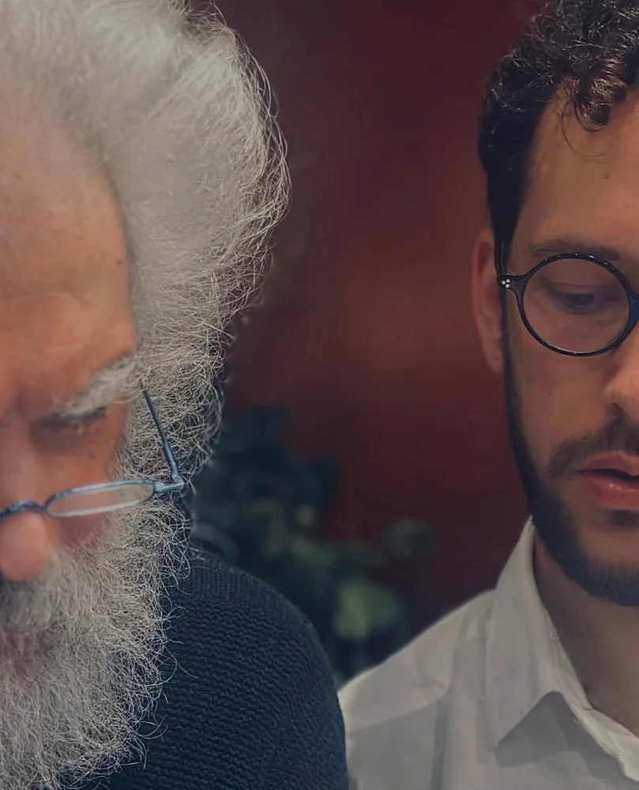
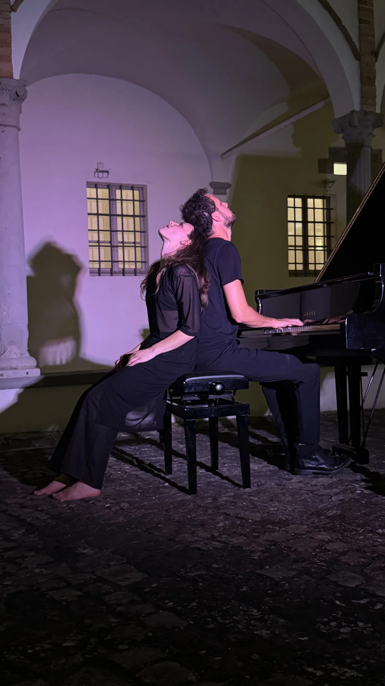

At PRO-FILI
- At the festivalTook part in PRO-FILI, at Pescheria Nuova. On Saturday 10 October at 21.00 he played the piano in FILO’s concert.
Biography
Nicola Elias Rigato (Italy, 1991) is a pianist, composer and music researcher working internationally. His research lies at the crossroads of piano, composition, improvisation and the spoken word.
He graduated with highest honours and special mention in Piano, Composition and Chamber Music from the Conservatoires of Rovigo, Milano and Castelfranco Veneto, and pursued advanced studies with Oxana Yablonskaya, Roberto Prosseda, Enrico Pompili and Massimiliano Mainolfi. He performs in Italy and abroad, alternating classical and contemporary repertoire with his own compositions, often in the form of lecture-concerts.
As a composer he is published by Universal Edition; his music has been commissioned and performed by international performers and ensembles (Orchestra Sinfonica di Sanremo, Fontana Mix Ensemble, Duo Zappa-Mainolfi). He has released four albums of original music. He is the author of the piano method La Mano, La Mente, Il Cuore – Il nuovo Metodo FOUR per Pianoforte and teaches piano and composition.
In the IANUA artistic collective he is an author, composer, pianist and director.
The works



Photos from Vedo un suono che si leva: IANUA, 2025. Anatomia di un abbraccio: IANUA, 2026.